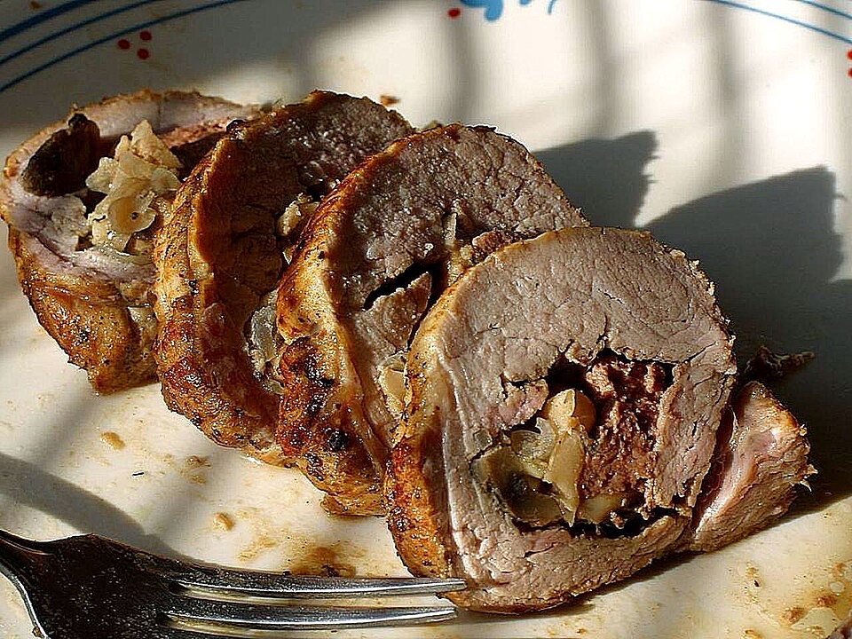

Carnes · Suínos
Lombo recheado

Ingredientes
- 1 kg de lombo de porco
- sal a gosto
- 1 dente de alho
- 1 cebola picada
- suco de 1 limão
- 6 fatias de pão de forma
- 2 xícaras de leite
- 2 maçãs verdes com casca e sementes, cortadas em fatias
- suco de 2 limões
- 1 cebola ralada
- 100 g de ameixas-pretas secas
- 4 gemas
- 1/2 xícara de parmesão ralado
- 2 pimentões
- pimenta-do-reino e sal a gosto
- 10 a 15 fatias de queijo mussarela
- 8 fatias de bacon
Modo de preparo
- Esfregue o lombo com sal, o alho esmagado, a cebola e o suco de 1 limão. Deixe tomar gosto por no mínimo 3 horas. Numa tigela, coloque o pão de forma e regue com o leite; deixe de molho.
- Espalhe as fatias de maçã num prato e regue com o suco de 2 limões. Preaqueça o forno a 170°C. Com faca afiada, abra o lombo até obter uma manta que possa ser enrolada. Reserve o caldo da marinada.
- Escorra o pão e esprema bem. Misture o pão, a cebola ralada, as ameixas picadas, as gemas, o parmesão, os pimentões picados e pimenta a gosto até obter um purê consistente.
- Tempere o lombo aberto com sal. Espalhe mussarela, depois as fatias de maçã, e cubra com o purê.
- Enrole como rocambole, amarre com barbante e coloque em assadeira untada. Cubra com as fatias de bacon. Asse no forno, regando com o caldo da marinada e água quente se secar. Retire o bacon e o barbante, deixe esfriar e congele.
Observação
Carnes assadas sem molho devem ser reaquecidas no forno cobertas com papel-alumínio. Congelamento: cubra a assadeira com filme, endureça no freezer, embrulhe e congele. Descongelamento: na geladeira de um dia para o outro; aqueça no forno baixo coberta com alumínio.